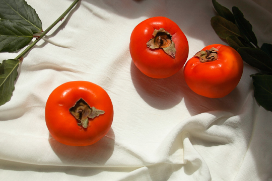
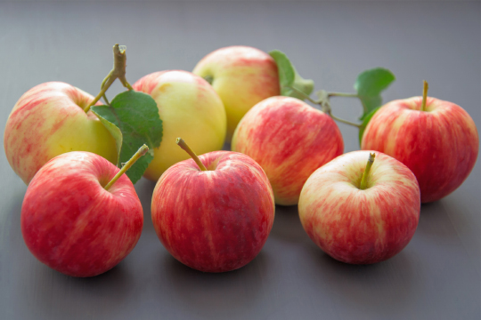

감
비타민A·C, 베타카로틴이 풍부
숙취 해소 효과
변비 예방 및 장 건강에 도움
시력보호 효과, 혈관질환 예방

무화과
섬유질이 풍부
혈압을 낮추는 데 도움이 됨
필수 미네랄의 좋은 공급원
다량의 식이 섬유를 공급하여 신체 시스템을 조정

사과
천연 피토케미컬 다량 함유
체액 저류와 관련된 문제들을 해소하는 천연 이뇨제
알츠하이머와 뇌의 조기 노화의 위험을 줄이는 데 효과적
하루에 사과 한 개만 먹어도 발생 위험을 20%까지 낮춤

배
루테올린 성분이 풍부하게 함유
감기 및 기관지 질환 개선
알칼리성 식품으로 수분함량이 90%에 가까울 정도
천연 소화제 효과, 숙취 해소에 효과적